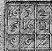

 If you have already dipped into Chapter II and looked at how some simple games and puzzles are designed, you'll have seen that any really interesting item needs to be given instructions on how to behave, and that these instructions are written in a language of their own. Chapter I is about that language, and its examples are mostly short programs to carry out mundane tasks, undistracted by the lure of adventure.
Inform turns your description of a game (or other program), called the “source code”, into a “story file” which can be played (or run through) using an “interpreter”. Interpreter programs are available for very many models of computer, and if you can already play Infocom's games or other people's Inform games on your machine then you already have an interpreter. There are several interpreter programs available, in a sort of friendly rivalry. You should be able to use whichever you prefer and even the oldest, most rickety interpreter will probably not give serious trouble. A good sign to look out for is compliance with the exacting Z-Machine Standards Document, agreed by an informal committee of interested parties between 1995 and 1997. At time of writing, the current version is Standard 1.0, dating from June 1997.
Turning source code into a story file is called “compilation”, and Inform itself is the compiler. It's also supplied with a whole slew of ready-made source code called the “library” and giving all the rules for adventure games. The story of what the library does and how to work with it occupies most of this manual, but not this chapter.
It isn't practicable to give installation instructions here, because they vary so much from machine to machine, but before you can go any further you'll need to install Inform: try downloading the software for your own machine from ftp.gmd.de, which should either install itself or give instructions. A useful test exercise would be to try to create the “Hello World” source code given below, then to compile it with Inform, and finally “play” it on your interpreter. (You can type up source code with any text editor or even with a word-processor, provided you save its documents as “text only”.)
Inform can run in a number of slightly different ways, controlled by “switches”. The way to set these varies from one installation to another. Note that this chapter assumes that you're running Inform in “Strict mode”, controlled by the -S switch, which is normally set and ensures that helpful error messages will be printed if a story file you have compiled does something it shouldn't.
Traditionally, all programming language tutorials begin by giving a program which does nothing but print “Hello world” and stop. Here it is in Inform:
! "Hello world" example program [ Main; print "Hello world^"; ];
The text after the exclamation mark is a “comment”, that is, it is text written in the margin by the author to remind himself of what is going on here. Such text means nothing to Inform, which ignores anything on the same line and to the right of an exclamation mark. In addition, any gaps made up of line and page breaks, tab characters and spaces are treated the same and called “white space”, so the layout of the source code doesn't much matter. Exactly the same story file would be produced by:
[
Main ;
print
"Hello world^" ;
]
;
or, at the other extreme, by:
[Main;print"Hello world^";];
Laying out programs legibly is a matter of personal taste.
▲
The exception to the rule about ignoring white space is inside quoted text, where
"Hello world^" and "Hello world^"
are genuinely different pieces of text and are treated
as such. Inform treats text inside quotation marks with much more care than its
ordinary program material: for instance, an exclamation mark inside quotation marks
will not cause the rest of its line to be thrown away as a comment.
Inform regards its source code as a list of things to look at, divided up by
semicolons ;. These things are generally objects, of which more later. In this
case there is only one, called Main, and it's of a special kind called a “routine”.
Every program has to contain a routine called Main. When a story file is
set running the interpreter follows the first instruction in Main, and it carries
on line by line from there. This process is called “execution”. Once the Main
routine is finished, the interpreter stops.
These instructions are called “statements”, a traditional term in computing albeit an ungrammatical one. In this case there is only one statement:
print "Hello world^";
Printing is the process of writing text onto the computer screen. This statement
prints the two words “Hello world” and then skips the rest of the line (or “prints
a new-line”), because the ^ character, in quoted text, means “new-line”. For
example, the statement
print "Blue^Red^Green^";
prints up:
Blue
Red
Green
print is one of 28 different statements in the Inform language. Only about 20
of these are commonly used, but the full list is as follows:
box |
break |
continue |
do |
font |
for |
give |
if |
inversion |
jump |
move |
new_line |
objectloop |
print |
print_ret |
quit |
read |
remove |
restore |
return |
rfalse |
rtrue |
save |
spaces |
string |
style |
switch |
while |
The following source code has three routines, Main,
Rosencrantz and Hamlet:
[ Main; print "Hello from Elsinore.^"; Rosencrantz(); ]; [ Rosencrantz; print "Greetings from Rosencrantz.^"; ]; [ Hamlet; print "The rest is silence.^"; ];
The resulting program prints up
Hello from Elsinore.
Greetings from Rosencrantz.
but the text “The rest is silence.” is never printed.
Execution begins at Main,
and “Hello from Elsinore” is printed; next, the statement
Rosencrantz()
causes the Rosencrantz routine to be executed. That continues until it
ends with the close-routine marker ],
whereupon execution goes back to Main just
after the point where it left off: since there is nothing more to do in
Main, the interpreter stops. Thus, Rosencrantz
is executed but Hamlet is not.
In fact, when the above source code is compiled, Inform notices
that Hamlet is never needed and prints out a warning to that
effect. The exact text produced by Inform varies from machine to machine,
but will be something like this:
RISC OS Inform 6.20 (10th December 1998) line 8: Warning: Routine "Hamlet" declared but not used Compiled with 1 warning
Errors are mistakes in the source which cause Inform
to refuse to compile it, but this is only a warning. It alerts the programmer
that a mistake may have been made (because presumably the programmer has
simply forgotten to put in a statement calling Hamlet) but
it doesn't prevent the compilation from taking place. Note that the opening
line of the routine Hamlet occurs on the 8th line of the
program above.
There are usually mistakes in a newly-written program
and one goes through a cycle of running a first draft through Inform,
receiving a batch of error messages, correcting the draft according to
these messages, and trying again. A typical error message would occur
if, on line 3, we had mistyped Rosncrantz() for
Rosencrantz(). Inform would then have produced:
RISC OS Inform 6.20 (10th December 1998) line 5: Warning: Routine "Rosencrantz" declared but not used line 8: Warning: Routine "Hamlet" declared but not used line 3: Error: No such constant as "Rosncrantz" Compiled with 1 error and 2 warnings (no output)
The error message means that on line 3 Inform ran into a name which
did not correspond to any known quantity: it's not the name of any
routine, in particular. A human reader would immediately realise what
was intended, but Inform doesn't, so that it goes on to warn that the
routine Rosencrantz is never used. Warnings (and errors)
are quite often produced as knock-on effects of other mistakes, so it is
generally a good idea to worry about fixing errors first and warnings
afterward.
Notice that Inform normally doesn't produce the final story file if errors occurred during compilation: this prevents it from producing damaged story files.
Inform numbers are normally whole numbers in the range −32,768 to 32,767. (Special programming is needed to represent larger numbers or fractions, as we shall see when parsing phone numbers in Chapter IV.) There are three notations for writing numbers in source code: here is an example of each.
-4205 $3f08 $$1000111010110
The difference is the radix, or number base, in which
they are expressed. The first is in decimal (base 10), the second hexadecimal
(base 16, where the digits after 9 are written a to
f or A to F) and the
third binary (base 2). Once Inform has read in a number, it forgets which
notation was used: for instance, if the source code is altered so that
$$10110 is replaced by 22, this makes no
difference to the story file produced.
A print statement can print numbers as well as text, though it always prints them back in ordinary decimal notation. For example, the program
[ Main; print "Today's number is ", $3f08, ".^"; ];
prints up
Today's number is 16136.
since 16,136 in base 10 is the same number as 3f08 in hexadecimal.
Literal quantities written down in the source code are called
“constants”. Numbers are one kind; strings of text like "Today's number is " are
another. A third kind are characters, given between single quotation
marks. For instance, 'x' means “the letter lower-case x”.
A “character” is a single letter or typewriter-symbol.
▲
Just as $3f08 is a fancy way of writing the number 16,136,
so 'x' is a fancy way of
writing the number 120. The way characters correspond to numeric values is
given by a code called ZSCII, itself quite close to the traditional computing standard
called ASCII. 120 means “lower-case x” in ASCII, too, but ZSCII does its
own thing with non-English characters like “é”. (You can type accented letters
directly into source code: see §1.11.) The available
characters and their ZSCII values are laid out in Table 2.
Inform also provides a few constants named for convenience, the most commonly used of which are true and false. A condition such as “the jewelled box is unlocked” will always have either the value true or the value false.
▲
Once again these are numbers in disguise. true is 1, false 0.
▲
Inform is a language designed with adventure games in mind, where a
player regularly types in commands like “unlock the box”, using a fairly
limited vocabulary. Writing a word like 'box' in the source code, in single-quotation
marks, adds it to the “dictionary” or vocabulary of the story file to be compiled. This is
a kind of constant, too: you can use it for writing code like “if the second word typed
by the player is 'box', then…”.
▲
If you need to lodge a single-letter word (say “h”) into the dictionary, you
can't put it in single quotes because then it would look like a character
constant ('h'). Instead, the best you can write is 'h//'. (The two slashes are
sometimes used to tack a little linguistic information onto the end of a dictionary
word, so that in some circumstances, see §29, you might want to
write 'pears//p' to indicate that “pears”
must go into the dictionary marked as a plural. In this case the two
slashes only serve to clarify that it isn't a character.)
▲
You can put an apostrophe ' into a dictionary word by writing it as ^:
for instance 'helen^s'.
▲▲ In two places where dictionary words often appear, the name slot of an object definition and in grammar laid out with Verb and Extend, you're allowed to use single or double quotes interchangeably, and people sometimes do. For clarity's sake, this book tries to stick to using single quotes around dictionary words at all times. The handling of dictionary words is probably the single worst-designed bit of syntax in Inform, but you're past it now.
Unlike a literal number, a variable is able to vary.
It is referred to by its name and, like the “memory” key on
some pocket calculators, remembers the last value placed in it. For
instance, if oil_left has been declared as a variable (see
below), then the statement
print "There are ", oil_left, " gallons remaining.^";
would cause the interpreter to print “There are
4 gallons remaining.” if oil_left happened to be 4,
and so on. It's possible for the statement to be executed many times and
produce different text at different times.
Inform can only know the named quantity oil_left
is to be a variable if the source code has “declared” that
it is. Each routine can declare its own selection of up to 15 variables on
its opening line. For example, in the program
[ Main alpha b; alpha = 2200; b = 201; print "Alpha is ", alpha, " while b is ", b, "^"; ];
the Main routine has two variables,
alpha and b.
Going back to the Main routine above, the =
sign which occurs twice is an example of an “operator”:
a notation usually made up of the symbols on the non-alphabetic
keys on a typewriter and which means something is to be done with
or calculated from the items it is written next to. Here =
means “set equal to”. When the statement alpha = 2200;
is interpreted, the current value of the variable alpha
is changed to 2,200. It then keeps that value until another such
statement changes it. All variables have the value 0 until they are
first set.
The variables alpha and b
are called “local variables” because they are local
to Main and are its private property. The source code
[ Main alpha; alpha = 2200; Rival(); ]; [ Rival; print alpha; ];
causes an error on the print statement in
Rival, since alpha does not exist there.
Indeed, Rival could even have defined a variable of its
own also called alpha and this would have been an entirely
separate variable.
· · · · ·
That's now two kinds of name: routines have names
and so have variables. Such names, for instance Rival and
alpha, are called “identifiers” and can be
up to 32 characters long. They may contain letters of the alphabet,
decimal digits or the underscore _ character (often
used to impersonate a space). To prevent them looking too much like
numbers, though, they cannot start with a decimal digit. The following
are examples of legal identifiers:
turns_still_to_play room101 X
Inform ignores any difference between upper and lower
case letters in such names, so for instance room101 is the
same name as Room101.
The Inform language is rich with operators, as Table 1 shows. This section introduces a first batch of them.
A general mixture of quantities and operators, designed to end up with a single resulting quantity, is called an “expression”. For example: the statement
seconds = 60*minutes + 3600*hours;
sets the variable seconds equal to 60
times the variable minutes plus 3600 times the variable
hours. White space is not needed between operators and
“operands” (the quantities they operate on, such as 3600 and hours).
The spaces on either side of the + sign were written in just for
legibility.
The arithmetic operators are the simplest ones. To begin with, there
are + (plus), - (minus), * (times)
and / (divide by). Dividing one whole number by
another usually leaves a remainder: for example, 3 goes into 7 twice,
with remainder 1. In Inform notation,
7/3 evaluates to 2 and
7%3 evaluates to 1
the % operator meaning “remainder
after division”, usually called
just “remainder”.
▲
The basic rule is that a == (a/b)*b + (a%b), so that for
instance:
13/5 == 2 13/-5 == -2 -13/5 == -2 -13/-5 == 2 13%5 == 3 13%-5 == 3 -13%5 == -3 -13%-5 == -3
• WARNING
Dividing by zero, and taking remainder after dividing by zero, are
impossible. You must write your program so that it never tries to. It's worth a
brief aside here on errors, because dividing by zero offers an example of how and
when Inform can help the programmer to spot mistakes. The following source
code:
[ Main; print 73/0; ];
won't compile, because Inform can see that it definitely involves something illegal:
line 2: Error: Division of constant by zero > print 73/0;
However, Inform fails to notice anything amiss when compiling this:
[ Main x; x = 0; print 73/x; ];
and this source code compiles correctly. When the resulting story file is interpreted, however, the following will be printed:
[** Programming error: tried to divide by zero **]
This is only one of about fifty different programming errors which can turn up when a story file is interpreted. As in this case, they arise when the interpreter has accidentally been asked to do something impossible. The moral is that just because Inform compiles source code without errors, it does not follow that the story file does what the programmer intended.
▲ Since an Inform number has to be between −32,768 and 32,767, some arithmetic operations overflow. For instance, multiplying 8 by 5,040 ought to give 40,320, but this is over the top and the answer is instead −25,216. Unlike dividing by zero, causing arithmetic overflows is perfectly legal. Some programmers make deliberate use of overflows, for instance to generate apparently random numbers.
▲▲ Only apparently random, because overflows are perfectly predictable. Inform story files store numbers in sixteen binary digits, so that when a number reaches 216 = 65,536 it clocks back round to zero (much as a car's odometer clocks over from 999999 miles to 000000). Now, since 65,535 is the value that comes before 0, it represents −1, and 65,534 represents −2 and so on. The result is that if you start with zero and keep adding 1 to it, you get 1, 2, 3, …, 32,767 and then −32,768, −32,767, −32,766, …, −1 and at last zero again. Here's how to predict an overflowing multiplication, say: first, multiply the two numbers as they stand, then keep adding or subtracting 65,536 from the result until it lies in the range −32,768 to 32,767. For example, 8 multiplied by 5,040 is 40,320, which is too big, but we only need to subtract 65,536 once to bring it into range, and the result is −25,216.
· · · · ·
In a complicated expression the order in which the operators work may affect the result. As most human readers would, Inform works out both of
3 + 2 * 6 2 * 6 + 3
as 15, because the operator * has
“precedence” over + and so is acted on first.
Brackets may be used to overcome this:
(3 + 2) * 6 2 * (6 + 3)
evaluate to 30 and 18 respectively. Each operator has
such a “precedence level”. When two operators have the same
precedence level (for example, + and -
are of equal precedence) calculation is (almost always) “left
associative”, that is, carried out left to right. So the notation
a-b-c means (a-b)-c and not
a-(b-c). The standard way to write formulae in maths
is to give + and - equal precedence,
but lower than that of * and / (which are
also equal). Inform agrees and also pegs % equal to
* and /.
The last purely arithmetic operator
is “unary minus”. This is also written as a minus sign
- but is not quite the same as subtraction.
The expression:
-credit
means the same thing as 0-credit. The
operator - is different from all those mentioned so far
because it operates only on one value. It has higher precedence than
any of the five other arithmetic operators. For example,
-credit - 5
means (-credit) - 5 and not
-(credit - 5).
One way to imagine precedence is to think of it as glue attached to the operator. A higher level means stronger glue. Thus, in
3 + 2 * 6
the glue around the * is stronger than
that around the +, so that 2 and 6 belong bound
to the *.
▲ Some languages have a “unary plus” too, but Inform hasn't.
· · · · ·
Some operators don't just work out values but actually change the current settings of variables: expressions containing these are called “assignments”. One such is “set equals”:
alpha = 72
sets the variable alpha equal to 72.
Like + and the others, it also comes up with an answer:
which is the value it has set, in this case 72. The other two assignment
operators are ++ and --, which will be
familiar to any C programmer. They are unary operators, and mean
“increase (or decrease) the value of this variable by one”.
If the ++ or -- goes before the variable,
then the increase (or decrease) happens before the value is read
off; if after, then after. For instance, if variable
currently has the value 12 then:
variable++ evaluates to 12 and leaves
variable set to 13;
++variable evaluates to 13 and leaves variable
set to 13;
variable-- evaluates to 12 and leaves variable
set to 11;
--variable evaluates to 11 and leaves variable
set to 11.
These operators are provided as convenient shorthand forms, since their effect could usually be achieved in other ways. Note that expressions like
500++ (4*alpha)-- 34 = beta
are quite meaningless: the values of 500 and 34
cannot be altered, and Inform knows no way to adjust alpha so as to
make 4*alpha decrease by 1. All three will cause
compilation errors.
· · · · ·
The “bitwise operators” are provided
for manipulating binary numbers on a digit-by-digit basis, something
which is only done in programs which are working with low-level data
or data which has to be stored very compactly. Inform provides
&, bitwise AND, |, bitwise OR and
~, bitwise NOT. For each digit, such an operator works out
the value in the answer from the values in the operands. Bitwise NOT
acts on a single operand and results in the number whose i-th
binary digit is the opposite of that in the operand (a 1 for a 0, a
0 for a 1). Bitwise AND (and OR) acts on two numbers and sets the
i-th digit to 1 if both operands have (either operand has)
i-th digit set. All Inform numbers are sixteen bits wide. So:
$$10111100 & $$01010001 == $$0000000000010000
$$10111100 | $$01010001 == $$0000000011111101
~ $$01010001 == $$1111111110101110
Here is one way to imagine how an Inform routine works: you feed some values into it, it then goes away and works on them, possibly printing some text out or doing other interesting things, and it then returns with a single value which it gives back to you. As far as you're concerned, the transaction consists of turning a group of starting values, called “arguments”, into a single “return value”:
A1, A2, A3, … → Routine → R
The number of arguments needed varies with the routine:
some, like Main and the other routines in this chapter so
far, need none at all. (Others need anything up to seven, which is the
maximum number allowed by Inform.) On the other hand, every routine
without exception produces a return value. Even when it looks as if
there isn't one, there is. For example:
[ Main; Sonnet(); ]; [ Sonnet; print "When to the sessions of sweet silent thought^"; print "I summon up remembrance of things past^"; ];
Main and Sonnet both take
no arguments, but they both return a value: as it happens this value
is true, in the absence of any instruction to the
contrary. (As was mentioned earlier, true is the same as
the number 1.) The statement Sonnet(); calls Sonnet
but does nothing with the return value, which is just thrown away.
But if Main had instead been written like so:
[ Main; print Sonnet(); ];
then the output would be
When to the sessions of sweet silent thought
I summon up remembrance of things past
1
because now the return value, 1, is not thrown away: it is printed out.
You can call it a routine with arguments by writing them in a list, separated by commas, in between the round brackets. For instance, here is a call supplying two arguments:
Weather("hurricane", 12);
When the routine begins, the value "hurricane" is
written into its first local variable, and the value 12 into
its second. For example, suppose:
[ Weather called force;
print "I forecast a ", (string) called, " measuring force ",
force, " on the Beaufort scale.^";
];
Leaving the details of the print statement aside
for the moment, the call to this routine produces the text:
I forecast a hurricane measuring force 12 on the Beaufort scale.
The Weather routine finishes when its
] end-marker is reached, whereupon it returns true,
but any of the following statements will finish a routine the moment
they are reached:
rfalse; which returns
false,
rtrue; which returns true,
return; which also returns true,
return ‹value›; which returns ‹value›.
For example, here is a routine to print out the cubes of the numbers 1 to 5:
[ Main; print Cube(1), " "; print Cube(2), " "; print Cube(3), " "; print Cube(4), " "; print Cube(5), "^"; ]; [ Cube x; return x*x*x; ];
When interpreted, the resulting story file prints up the text:
1 8 27 64 125
▲
Any “missing arguments” in a routine call are set equal to
zero, so the call Cube() is legal and does the same as
Cube(0). What you mustn't do is to give too many
arguments: Cube(1,2) isn't possible because there is no
variable to put the 2 into.
▲ A hazardous, but legal and sometimes useful practice is for a routine to call itself. This is called recursion. The hazard is that the following mistake can be made, probably in some much better disguised way:
[ Disaster; return Disaster(); ];
Despite the reassuring presence of the word return,
execution is tied up forever, unable to finish evaluating the return
value. The first call to Disaster needs to make a
second before it can finish, the second needs to make a third, the
third… and so on. (Actually, for “forever” read
“until the interpreter runs out of stack space and halts”,
but that's little comfort.)
if, true and falseThe facilities described so far make Inform about as powerful as the average small programmable calculator. To make it a proper programming language, it needs much greater flexibility of action. This is provided by special statements which control whether or not, and if so how many times or in what order, other statements are executed. The simplest is if:
if (‹condition›) ‹statement›
which executes the ‹statement› only if the ‹condition›, when it is tested, turns out to be true. For example, when the statement
if (alpha == 3) print "Hello";
is executed, the word “Hello” is
printed only if the variable alpha currently has
value 3. It's important not to confuse the == (test
whether or not equal to) with the = operator (set equal
to). But because it's easy to write something plausible like
if (alpha = 3) print "Hello";
by accident, which always prints “Hello”
because the condition evaluates to 3 which is considered non-zero
and therefore true (see below), Inform will issue a warning if you try
to compile something like this. (‘=’ used as condition:
‘==’ intended?)
· · · · ·
Conditions are always given in brackets. There are 12 different conditions in Inform (see Table 1), six arithmetic and half a dozen to do with objects. Here are the arithmetic ones:
(a == b) | a equals b |
(a ~= b) | a doesn't equal b |
(a >= b) | a is greater than or equal to b |
(a <= b) | a is less than or equal to b |
(a > b) | a is greater than b |
(a < b) | a is less than b |
A useful extension to this set is provided by the
special operator or, which gives alternative
possibilities. For example,
if (alpha == 3 or 4) print "Scott"; if (alpha ~= 5 or 7 or 9) print "Amundsen";
where two or more values are given with the word
or between. “Scott” is printed if alpha has
value either 3 or 4, and “Amundsen” if the value of
alpha
is not 5, is not 7 and is not 9. or can
be used with any condition, and any number of alternatives can be
given. For example
if (player in Forest or Village or Building) ...
often makes code much clearer than writing three separate conditions out. Or you might want to use
if (x > 100 or y) ...
to test whether x is bigger than the
minimum of 100 and y.
Conditions can also be built up from simpler ones
using the three logical operators &&,
|| and ~~, pronounced “and”,
“or” and “not”. For example,
if (alpha == 1 && (beta > 10 || beta < -10)) print "Lewis"; if (~~(alpha > 6)) print "Clark";
“Lewis” is printed if alpha
equals 1 and beta is outside the range −10 to
10; “Clark” is printed if alpha is less
than or equal to 6.
▲
&& and || work left to right and
stop evaluating conditions as soon as the final outcome is known.
So for instance if (A && B) ...
will work out A first. If this is false,
there's no need to work out B. This is sometimes called
short-cut evaluation and can be convenient when working out conditions
like
if (x~=nothing && TreasureDeposited(x)==true) ...
where you don't want TreasureDeposited
to be called with the argument nothing.
· · · · ·
Conditions are expressions like any other, except
that their values are always either true or
false. You can write a condition as a value, say by
copying it into a variable like so:
lower_caves_explored = (Y2_Rock_Room has visited);
This kind of variable, storing a logical state, is
traditionally called a “flag”. Flags are always either
true or false: they are like the red flag
over the beach at Lee-on-Solent in Hampshire, which is either flying,
meaning that the army is using the firing range, or not flying,
when it is safe to walk along the shore. Flags allow you to write
natural-looking code like:
if (lower_caves_explored) print "You've already been that way.";
The actual test performed by if (x) ...
is x~=0, not that x==true, because all
non-zero quantities are considered to represent truth whereas only
zero represents falsity.
· · · · ·
▲
Now that the if statement is available, it's possible
to give an example of a recursion that does work:
[ GreenBottles n;
print n, " green bottles, standing on a wall.^";
if (n == 0) print "(And an awful lot of broken glass.)^";
else {
print "And if one green bottle should accidentally fall^";
print "There'd be ", n-1, " green bottles.^";
return GreenBottles(n-1);
}
];
Try calling GreenBottles(10). It prints
the first verse of the song, then before returning it calls
GreenBottles(9) to print the rest. So it goes on, until
GreenBottles(0).
At this point n is zero, so the text “(And an awful lot of broken
glass.)” is printed for the first and only time. GreenBottles(0)
then returns back to GreenBottles(1), which returns
to GreenBottles(2), which… and so on until
GreenBottles(10) finally returns and the song is
completed.
▲▲
Thus execution reached “ten routines deep” before starting
to return back up, and each of these copies of GreenBottles
had its own private copy of the variable n. The limit
to how deep you are allowed to go varies from one player's machine
to another, but here is a rule of thumb, erring on the low side for
safety's sake. (On a standard interpreter it will certainly be safe.)
Total up 4 plus the number of its variables for each routine
that needs to be running at the same time, and keep the total beneath
1,000. Ten green bottles amounts only to a total of 10 × 5 = 50,
and as it seems unlikely that anyone will wish to read the lyrics to
“two hundred and one green bottles” the above recursion
is safe.
else and switchA feature of all statements choosing what to do
next is that instead of just giving a single ‹statement›,
one can give a list of statements grouped together into a unit called
a “code block”. Such a group begins with an open brace
{ and ends with a close brace }.
For example,
if (alpha > 5) {
v = alpha*alpha;
print "The square of alpha is ", v, ".^";
}
If alpha is 3, nothing is printed;
if alpha is 9,
The square of alpha is 81.
is printed. (The indentation used in the source code,
like all points of source code layout, is a matter of personal taste.†)
In some ways, code blocks are like routines, and at first it may seem
inconsistent to write routines between [ and ]
brackets and code blocks between braces { and }.
However, code blocks cannot have private variables of their own and do
not return values; and it is possible for execution to break out of
code blocks again, or to jump from block to block, which cannot happen
with routines.
† Almost everybody indents each code block as shown, but the position of the open brace is a point of schism. This book adopts the “One True Brace Style”, as handed down in such sacred texts as the original Unix source code and Kernighan and Ritchie's textbook of C. Other conventions place the open brace vertically above its matching closure, perhaps on its own otherwise blank line of source code.
· · · · ·
An if statement can optionally have the form
if ( ‹condition› )
‹statement1› else ‹statement2›
whereupon ‹statement1› is executed if the condition is true, and ‹statement2› if it is false. For example,
if (alpha == 5) print "Five."; else print "Not five.";
Note that the condition is only checked once, so that the statement
if (alpha == 5) {
print "Five.";
alpha = 10;
}
else
print "Not five.";
cannot ever print both “Five” and then “Not five”.
▲
The else clause has a snag attached: the problem of
“hanging elses”. In the following, which if
statement does the else attach to?
if (alpha == 1) if (beta == 2)
print "Clearly if alpha=1 and beta=2.^";
else
print "Ambiguous.^";
Without clarifying braces, Inform pairs an else to
the most recent if. (Much as the U.S. Supreme Court rigorously
interprets muddled laws like “all animals must be licensed,
except cats, other than those under six months old” by applying
a so-called Last Antecedent Rule to ambiguous qualifications like this
“other than…”.) The following version is much better
style:
if (alpha == 1) {
if (beta == 2)
print "Clearly if alpha=1 and beta=2.^";
else
print "Clearly if alpha=1 but beta not 2.^";
}
· · · · ·
The if … else …
construction is ideal for switching execution between two possible
“tracks”, like railway signals, but it is a nuisance trying
to divide between many different outcomes this way. To follow the
analogy, the switch construction is like a railway
turntable.
print "The train on platform 1 is going to ";
switch (DestinationOnPlatform(1)) {
1: print "Dover Priory.";
2: print "Bristol Parkway.";
3: print "Edinburgh Waverley.";
default: print "a siding.";
}
The default clause is optional but must be placed last
if at all: it is executed when the original expression matches none of
the other values. Otherwise there's no obligation for these clauses
to be given in numerical or any other order. Each possible alternative
value must be a constant, so
switch (alpha) {
beta: print "The variables alpha and beta are equal!";
}
will produce a compilation error. (But note that in
a typical game, the name of an object or a location, such as
First_Court, is a constant, so there is no problem
in quoting this as a switch value.)
Any number of outcomes can be specified, and values can be grouped together in lists separated by commas, or in ranges like 3 to 6. For example:
print "The mission Apollo ", num, " made ";
switch (num) {
7, 9: print "a test-flight in Earth orbit.";
8, 10: print "a test-flight in lunar orbit.";
11, 12, 14 to 17: print "a landing on the Moon.";
13: print "it back safely after a catastrophic explosion.";
}
Each clause is automatically a code block, so a whole
run of statements can be given without the need for any braces {
and } around them.
▲
If you're used to the C language, you might want to note a major
difference: Inform doesn't have “case fall-through”, with
execution running from one case to the next, so there's no need to
use break statements.
▲▲ A good default clause for the above example would be a little complicated: Apollo 1 was lost in a ground fire, causing a shuffle so that 2 and 3 never happened, while automatic test-flights of the Saturn rocket were unofficially numbered 4 to 6. Apollo 20 was cancelled to free up a heavy launcher for the Skylab station, and 18 and 19 through budget cuts, though the Apollo/Soyuz Test Project (1975) is sometimes unhistorically called Apollo 18. The three Apollo flights to Skylab were called Skylab 2, 3 and 4. All six Mercury capsules were numbered 7, while at time of writing the Space Shuttle mission STS-88 has just landed and the next to launch, in order, are projected to be 96, 93, 99, 103, 101 and 92. NASA has proud traditions.
while, do…
until, for, break,
continueThe other four Inform control constructions are all
“loops”, that is, ways to repeat the execution of a given
statement or code block. Discussion of one of them, called
objectloop, is deferred until
§3.4.
The two basic forms of loop are while
and do…until:
while (‹condition›) ‹statement›
do ‹statement› until (‹condition›)
The first repeatedly tests the condition and, provided it is still true, executes the statement. If the condition is not even true the first time, the statement is never executed even once. For example:
[ SquareRoot n x; while (x*x < n) x = x + 1; if (x*x == n) return x; return x - 1; ];
which is a simple if rather inefficient way to find
square roots, rounded down to the nearest whole number. If
SquareRoot(200) is called, then x runs
up through the values 0, 1, 2, …, 14, 15, at which point x*x
is 225: so 14 is returned. If SquareRoot(0) is called,
the while condition never holds at all and so the return
value is 0, made by the if statement.
The do … until loop
repeats the given statement until the condition is found to be true.
Even if the condition is already satisfied, like (true),
the statement is always executed the first time through.
· · · · ·
One particular kind of while loop is
needed so often that there is an abbreviation for it, called
for. This can produce any loop in the form
‹start›
while (‹condition›) {
…
‹update›
}
where ‹start› and ‹update› are expressions which actually do something, such as setting a variable. The notation to achieve this is:
for (‹start› :
‹condition› : ‹update›) …
Note that if the condition is false the very first time, the loop is never executed. For instance, this prints nothing:
for (counter=1 : counter<0 : counter++) print "Banana";
Any of the three parts of a for statement can
be omitted. If the condition is missed out, it is assumed always true,
so that the loop will continue forever, unless escaped by other means
(see below).
For example, here is the while version
of a common kind of loop:
counter = 1;
while (counter <= 10) {
print counter, " ";
counter++;
}
which produces the output “1 2 3 4 5 6 7 8 9 10”.
(Recall that counter++ adds 1 to the variable counter.)
The abbreviated version is:
for (counter=1 : counter<=10 : counter++)
print counter, " ";
▲ Using commas, several assignments can be joined into one. For instance:
i++, score=50, j++
is a single expression. This is never useful in
ordinary code, where the assignments can be divided up by semicolons
in the usual way. But in for loops it can be a convenience:
for (i=1, j=5: i<=5: i++, j--)
print i, " ", j, ", ";
produces the output “1 5, 2 4, 3 3, 4 2, 5 1,”.
▲▲
Comma , is an operator, and moreover is the one with the
lowest precedence level. The result of a,b is always
b, but a and b are both evaluated and in that order.
· · · · ·
On the face of it, the following loops all repeat forever:
while (true) ‹statement›
do ‹statement› until (false)
for (::) ‹statement›
But there is always an escape. One way is to return
from the current routine. Another is to jump to a label outside the
loop (see below), though if one only wants to escape the current loop
then this is seldom good style. It's neatest to use the statement
break, which means “break out of” the current
innermost loop or switch statement: it can be read as
“finish early”. All these ways out are entirely safe,
and there is no harm in leaving a loop only half-done.
The other simple statement used inside loops is
continue. This causes the current iteration to end immediately,
but the loop then continues. In particular, inside a for
loop, continue skips the rest of the body of the loop and
goes straight to the update part. For example,
for (i=1: i<=5: i++) {
if (i==3) continue;
print i, " ";
}
will output “1 2 4 5”.
· · · · ·
▲ The following routine is a curious example of a loop which, though apparently simple enough, contains a trap for the unwary.
[ RunPuzzle n count;
do {
print n, " ";
n = NextNumber(n);
count++;
}
until (n==1);
print "1^(taking ", count, " steps to reach 1)^";
];
[ NextNumber n;
if (n%2 == 0) return n/2; ! If n is even, halve it
return 3*n + 1; ! If n is odd, triple and add 1
];
The call RunPuzzle(10), for example,
results in the output
10 5 16 8 4 2 1
(taking 6 steps to reach 1)
The definition of RunPuzzle assumes
that, no matter what the initial value of n, enough
iteration will end up back at 1. If this did not happen, the interpreter
would lock up into an infinite loop, printing numbers forever. The
routine is apparently very simple, so it would seem reasonable that
by thinking carefully enough about it, we ought to be able to decide
whether or not it will ever finish. But this is not so easy as it looks.
RunPuzzle(26) takes ten steps, but there again,
RunPuzzle(27) takes 111. Can this routine ever lock up into
an infinite loop, or not?
▲▲
The answer, which caught the author by surprise,
is: yes. Because of Inform's limited number range, eventually the
numbers reached overflow 32,767 and Inform interprets them as negative
− and quickly homes in on the cycle −1, −2,
−1, −2,… This first happens to RunPuzzle(447).
Using proper arithmetic, unhindered by a limited number range, the
answer is unknown. As a student in Hamburg in the 1930s, Lothar
Collatz conjectured that every positive n eventually reaches
1. Little progress has been made (though it is known to be true if
n is less than 240), and even Paul Erdös
said of it that “Mathematics is not yet ready for such problems.”
See Jeffrey Lagarias's bibliography The 3x + 1 Problem
and its Generalisations (1996).
Adventure games take a lot of trouble over printing, so Inform is rich in features to make printing elegant output more easy. During story-file interpretation, your text will automatically be broken properly at line-endings. Inform story files are interpreted on screen displays of all shapes and sizes, but as a programmer you can largely ignore this. Moreover, Inform itself will compile a block of text spilling over several source-code lines into normally-spaced prose, so:
print "Here in her hairs
the painter plays the spider, and hath woven
a golden mesh t'untrap the hearts of men
faster than gnats in cobwebs";
results in the line divisions being replaced by a single
space each. The text printed is: “Here
in her hairs the painter plays the spider, and hath woven
a golden mesh…” and so on. There is one exception to this:
if a line finishes with a ^ (new-line) character, then no space is
added.
▲
You shouldn't type double-spaces after full stops or other punctuation,
as this can spoil the look of the final text on screen. In particular,
if a line break ends up after the first space of a double-space, the next
line will begin with the second space. Since many typists habitually
double-space, Inform has a switch -d1 which contracts “. ”
to “. ” wherever it occurs, and then a further setting -d2
which also contracts “! ”
to “! ” and “? ”
to “? ”. A modest warning, though: this can sometimes
make a mess of diagrams. Try examining the 1851 Convention on Telegraphy
Morse Code chart in ‘Jigsaw’, for instance, where the
present author inadvertently jumbled the spacing because -d
treated the Morse dots as full stops.
· · · · ·
When a string of text is printed up with print,
the characters in the string normally appear exactly as given in the
source code. However, four characters have special meanings.
^ means “print a new-line”.
The tilde character ~, meaning “print a quotation
mark”, is needed since quotation marks otherwise finish strings.
Thus,
print "~Look,~ says Peter. ~Socks can jump.~^Jane agrees.^";
is printed as
“Look,” says Peter.
“Socks can jump.”
Jane agrees.
The third remaining special character is @,
occasionally used for accented characters and other unusual effects,
as described below. Finally, \ is reserved for
“folding lines”, and is no longer needed but is retained
so that old programs continue to work.
▲
If you want to print an actual ~, ^,
@ or \, you may need one of the following
“escape sequences”. A double @ sign followed
by a decimal number means the character with the given ZSCII value,
so in particular
@@92 |
comes out as “\” |
@@64 |
comes out as “@” |
@@94 |
comes out as “^” |
@@126 |
comes out as “~” |
· · · · ·
A number of Inform games have been written in European languages other than English, and even English-language games need accented letters from time to time. Inform can be told via command-line switches to assume that quoted text in the source code uses any of the ISO 8859-1 to -9 character sets, which include West and Central European forms, Greek, Arabic, Cyrillic and Hebrew. The default is ISO Latin-1, which means that you should be able to type most standard West European letters straight into the source code.
▲
If you can't conveniently type foreign accents on your keyboard, or you
want to make a source code file which could be safely taken from a PC
to a Macintosh or vice versa, you can instead type accented characters
using @. (The PC operating system Windows and Mac OS
use incompatible character sets, but this incompatibility would only
affect your source code. A story file, once compiled, behaves identically
on PC and Macintosh regardless of what accented letters it may contain.)
Many accented characters can be written as @, followed by
an accent marker, then the letter on which the accent appears:
@^ put a circumflex on the next letter: a e i o u A E I O or U
@' put an acute on the next letter: a e i o u y A E I O U or Y
@` put a grave on the next letter: a e i o u A E I O or U
@: put a diaeresis on the next letter: a e i o u A E I O or U
@c put a cedilla on the next letter: c or C
@~ put a tilde on the next letter: a n o A N or O
@\ put a slash on the next letter: o or O
@o put a ring on the next letter: a or A
A few other letter-forms are available: German ß (@ss),
ligatures (@oe, @ae, @OE,
@AE), Icelandic “thorn” @th
and “eth” @et, a pounds-sterling sign
(@LL), Spanish inverted punctuation (@!! and
@??) and continental European quotation marks
(@<< and @>>): see
Table 2. For instance,
print "Les @oeuvres d'@AEsop en fran@ccais, mon @'el@`eve!"; print "Na@:ive readers of the New Yorker re@:elected Mr Clinton."; print "Gau@ss first proved the Fundamental Theorem of Algebra.";
Accented characters can also be referred to as constants,
like other characters. Just as 'x' represents the character
lower-case-X, so '@^A' represents capital-A-circumflex.
▲▲
It takes a really, really good interpreter with support built in for
Unicode and access to the proper fonts to use such a story file, but
in principle you can place any Unicode character into text by quoting its
Unicode value in hexadecimal. For instance, @{a9} produces a copyright
sign (Unicode values between $0000 and $00ff
are equal to ISO Latin1 values); @{2657} is a White bishop
chess symbol; @{274b} is a “heavy eight teardrop-spoked
propeller asterisk”; @{621} is the Arabic letter
Hamza, and so on for around 30,000 more, including vast sets for Pacific
Rim scripts and even for invented ones like Klingon or Tolkien's Elvish.
Of course none of these new characters are in the regular ZSCII set,
but ZSCII is configurable using Inform's Zcharacter directive.
See §36 for more.
· · · · ·
▲
The remaining usage of @ is hacky but powerful. Suppose
you are trying to implement some scenes from Infocom's spoof of 1930s
sci-fi, ‘Leather Goddesses of Phobos’, where one of the
player's companions has to be called Tiffany if the player is female,
and Trent if male. The name turns up in numerous messages and it would
be tiresome to keep writing
if (female_flag) print "Tiffany"; else print "Trent";
Instead you can use one of Inform's 32 “printing-variables”
@00 to @31. When the text @14
is printed, for instance, the contents of string 14 are substituted in.
The contents of string 14 can be set using the string statement,
so:
if (female_flag) string 14 "Tiffany"; else string 14 "Trent"; ... print "You offer the untangling cream to @14, who whistles.^";
The value specified by a string statement
has to be a literal, constant bit of text. There are really
hacky ways to get around this, but if you needed to then you'd probably
be better off with a different solution anyway.
print and print_ret
statementsThe print and print_ret
statements are almost identical. The difference is that the second
prints out a final and extra new-line character, and then causes a
return from the current routine with the value true. Thus,
print_ret should be read as “print this, print a
new-line and then return true”, and so
print_ret "That's enough of that.";
is equivalent to
print "That's enough of that.^"; rtrue;
As an abbreviation, it can even be shortened to:
"That's enough of that.";
Although Inform newcomers are often confused by the fact that this innocently free-standing bit of text actually causes a return from the current routine, it's an abbreviation which pays dividends in adventure-writing situations:
if (fuse_is_lit) { deadflag = true; "The bomb explodes!"; }
"Nothing happens.";
Note that if the source code:
[ Main; "Hello, and now for a number..."; print 21*764; ];
is compiled, Inform will produce the warning message:
line 3: Warning: This statement can never be reached. > print 21*764;
because the bare string on line 2 is printed using
print_ret: so the text is printed, then a new-line is printed,
and then a return takes place immediately. As the warning message indicates,
there is no way the statement on line 3 can ever be executed.
So what can be printed? The answer is a list of terms, separated by commas. For example,
print "The value is ", value, ".";
contains three terms. A term can take the following forms:
| ‹a value› | printed as a (signed, decimal) number |
| ‹text in double-quotes› | printed as text |
(‹rule›) ‹value› |
printed according to some special rule |
Inform provides a stock of special printing rules built-in, and also allows the programmer to create new ones. The most important rules are:
(char) |
print out the character which this is the ZSCII code for |
(string) |
print out this string |
(address) |
print out the text of this dictionary word |
(name) |
print out the name of this object (see §3) |
Games compiled with the Inform library have several
other printing rules built-in (like print (The)
…), but as these aren't part of the Inform language as such
they will be left until §26.
▲
print (string) … requires a little explanation. Of
the following lines, the first two print out “Hello!”
but the third prints only a mysterious number:
print (string) "Hello!"; x = "Hello!"; print (string) x; x = "Hello!"; print x;
This is because strings are internally represented by
mysterious numbers. print (string) means “interpret
this value as the mysterious number of a string, and print out
that string”: it is liable to give an error, or in some cases
print gibberish, if applied to a value which isn't the mysterious
number of any string.
· · · · ·
Any Inform program can define its own printing rules simply by providing a routine whose name is the same as that of the rule. For example, the following pair of routines provides for printing out a value as a four-digit, unsigned hexadecimal number:
[ hex x y;
y = (x & $7f00) / $100;
if (x<0) y = y + $80;
x = x & $ff;
print (hexdigit) y/$10, (hexdigit) y,
(hexdigit) x/$10, (hexdigit) x;
];
[ hexdigit x;
x = x % $10;
switch (x) {
0 to 9: print x;
10: print "a"; 11: print "b"; 12: print "c";
13: print "d"; 14: print "e"; 15: print "f";
}
];
You can paste these two routines into any Inform
source code to make these new printing rules hex and
hexdigit available to that code. For example,
print (hex) 16339; will then print up “3fd3”,
and print (hex) -2; will print “fffe”.
Something to look out for is that if you inadvertently write
print hex(16339);
then the text printed will be “3fd31”,
with a spurious 1 on the end: because you've printed out the
return value of the routine hex, which was true,
or in other words 1.
Besides print and print_ret,
several other statements can also be used for printing.
new_line
prints a new-line, otherwise known as a carriage return (named for the carriage which used to move paper across a typewriter). This is equivalent to
print "^"
but is a convenient abbreviation. Similarly,
spaces ‹number›
prints a sequence of the given number of spaces.
box ‹string1› …
‹stringn›
displays a reverse-video panel in the centre of the screen, containing each string on its own line. For example, the statement
box "Passio domini nostri" "Jesu Christi Secundum" "Joannem";
displays the opening line of the libretto to Arvo Pärt's ‘St John Passion’:
| Passio domini nostri Jesu Christi Secundum Joannem |
· · · · ·
Text is normally displayed in an unembellished but legible type intended to make reading paragraphs comfortable. Its actual appearance will vary from machine to machine running the story file. On most machines, it will be displayed using a “font” which is variably-pitched, so that for example a “w” will be wider on-screen than an “i”. Such text is much easier to read, but makes it difficult to print out diagrams. The statement
print "+------------+
^+ Hello +
^+------------+^";
will print something irregular if the letters in “Hello” and the characters “-”, “+” and “ ” (space) do not all have the same width on-screen:
+------------+
+ Hello +
+------------+
Because one sometimes does want to print such a diagram,
to represent a sketch-map, say, or to print out a table, the statement
font is provided:
font on font off
font off switches into a fixed-pitch
display style. It is now guaranteed that the interpreter will print
all characters at the same width. font on restores
the usual state of affairs.
In addition, you can choose the type style from a small set of possibilities: roman (the default), boldface, underlined or otherwise emphasized (some interpreters will use italic for this), reverse-colour:
style roman style bold style underline style reverse
“Reverse colour” would mean, for instance, yellow on blue if the normal text appearance happened to be blue on yellow. An attempt will be made to approximate these effects whatever kind of machine is running the story file.
▲ Changes of foreground and background colours, so memorably used in games like Adam Cadre's ‘Photopia’, can be achieved with care using Z-machine assembly language. See §42.
Inform provides a small stock of functions ready-defined,
but which are used much as other routines are. As most of these concern
objects, only one will be given here: random, which has
two forms:
random(N)
returns a random number in the range 1, 2, …,
N, each of these outcomes being (in theory) equally
likely. N should be a positive number, between 1 and
32,767, for this to work properly.
random(‹two or more constant quantities, separated by commas›)
returns a random choice from the given selection of constant values. Thus,
print (string) random("red", "blue", "green", "violet");
prints the name of one of these four colours at random. Likewise,
print random(13, 17);
has a 50% chance of printing “13”, and a 50% chance of printing “17”.
▲
Random numbers are produced inside the interpreter by a “generator”
which is not truly random in its behaviour. Instead, the sequence of
numbers it produces depend on a value inside the generator called
the “seed”. Setting this value is called “seeding
the random-number generator”. Whenever it has the same seed value,
the same sequence of random values will be harvested. This is called
“pseudo-randomness”. An interpreter normally goes to some
effort to start up with a seed value which is unpredictable: say,
the current time of day in milliseconds. Because you just might want
to make it predictable, though, you can change the seed value within
the story file by calling random(N) for a negative
number N of your own choosing. (This returns zero.)
Seeding is sometimes useful to test a game which contains random
events or delays. For example if you have release 29 of Infocom's
game ‘Enchanter’, you may be surprised to know that you
can type “#random 14” into it, after which its random
events will be repeatable and predictable. Internally, ‘Enchanter’
does this by calling random(-14).
There are four statements left which control the
flow of execution, but one should try to avoid using any of them if,
for instance, a while loop would do the job more tidily.
Please stop reading this section now.
▲ Oh very well. ‘Deprecated’ is too strong a word, anyway, as there are circumstances where jumping is justified and even elegant: to break out of several loops at once, for instance, or to construct a finite state machine. It's the gratuitous use of jumping which is unfortunate, as this rapidly decreases the legibility of the source code.
▲
The jump statement transfers execution
to some named place in the same routine. (Some programming languages
call this goto.) To use jump a notation
is needed to mark particular places in the source code. Such markers
are called “labels”. For example, here is a never-ending
loop made by hand:
[ Main i; i=1; .Marker; print "I have now printed this ", i++, " times.^"; jump Marker; ];
This routine has one label, Marker. A
statement consisting only of a full stop and then an identifier means
“put a label here and call it this”. Like local variables,
labels belong to the routines defining them and cannot be used by
other routines.
▲
The quit statement ends interpretation of the story file
immediately, as if a return had taken place from the Main
routine. This is a drastic measure, best reserved for error
conditions so awful that there is no point carrying on.
▲▲
An Inform story file has the ability to save a snapshot of its entire
state and to restore back to that previous state. This snapshot includes
values of variables, the point where code is currently being executed,
and so on. Just as we cannot know if the universe is only six thousand
years old, as creationists claim, having been endowed by God with a
carefully faked fossil record, so an Inform story file cannot know if
it has been executing all along or if it was only recently restarted.
The statements required are save and restore:
save ‹label›
restore ‹label›
This is a rare example of an Inform feature which may
depend on the host machine's state of health: for example, if all disc
storage is full, then save will fail. It should always
be assumed that these statements may well fail. A jump to
the label provided occurs if the operation has been a success.
This is irrelevant in the case of a restore since, if
all has gone well, execution is now resuming from the successful branch
of the save statement: because that is where execution was
when the state was saved.
▲▲
If you don't mind using assembly language (see
§42), you can imitate exceptions,
in the sense of programming languages like Java. The opcodes you would
need are @throw and @catch.
• REFERENCES
If you need to calculate with integers of any size then the restriction
of Inform numbers to the range −32,768 to 32,767 is a nuisance.
The function library "longint.h", by
Chris Hall and Francis Irving, provides routines to calculate with
signed and unsigned
4-byte integers, increasing the range to about
±2,147,000,000. •L. Ross
Raszewski's function library "ictype.h"
is an Inform version of the ANSI C routines "ctype.h",
which means that it contains routines to test whether a given character
is lower or upper case, or is a punctuation symbol, and so forth. (See
also the same author's "istring.h".)